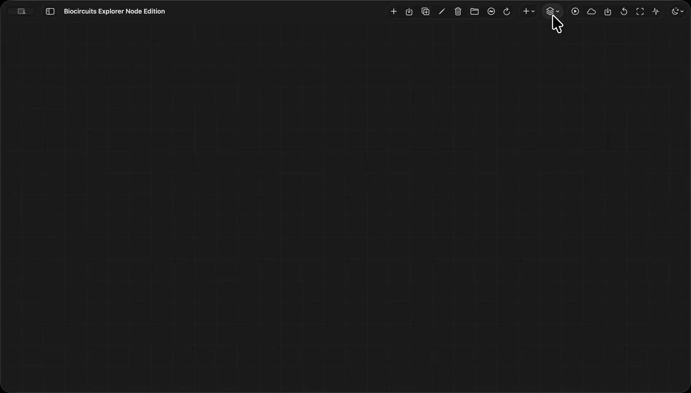
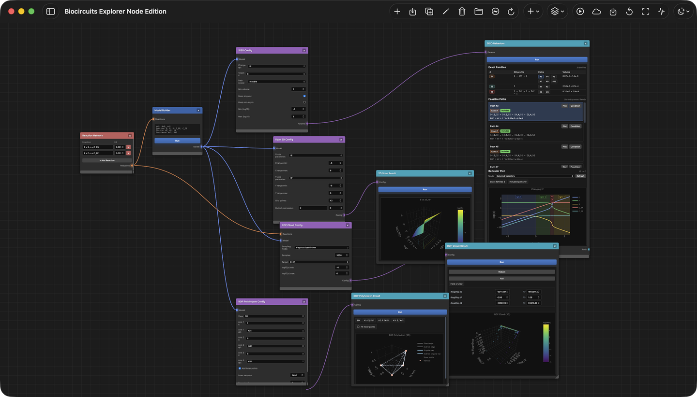

Wiki · 第一章
反应级数多面体与 Biocircuits Explorer 工作台入门
面向实际使用的说明：先交代多面体背后的数学对象，再说明画布上各个节点 代表什么，以及怎样把一个结合网络变成可检查的分析结论。
1本 Wiki 是什么
Biocircuits Explorer 是一个用 反应级数多面体（Reaction Order Polyhedra，ROP）分析平衡结合网络的工作台。首页用截图与短视频展示入口， 本 Wiki 则回答更具体的问题：应用实际在计算什么，画布上的几何对象如何命名， 以及怎样把“关于回路的问题”整理成可复核的分析步骤。
第一次阅读请按章节顺序通读。当你已经搭过几个网络之后，每一节都可以独立作为 参考。
面向谁
适合刚接触 Web 版或 macOS 版应用、希望理解 regime 图、SISO 路径与多面体 到底在画什么 的新用户，而不仅仅是“按哪个按钮”。无需 代数几何或化学反应网络理论的背景，但建议先了解基本的化学平衡（质量作用、 守恒量）。
阅读口径
这不是一份承诺接口稳定的产品手册。文中的节点名、按钮名和云端部署说明对应 当前仓库实现；数学部分描述的是平衡结合网络的渐近结构，数值结论仍需要用你 实际采用的参数范围检查。
2反应级数多面体的理论
2.1什么是反应级数多面体？
反应级数多面体（ROP）是一个几何对象，用来组织平衡结合网络 在不同参数尺度下可能出现的渐近 regime。它不替代具体数值参数，而是在你开始 扫描参数之前，先给出一张结构性的地图。
ROP 分析的输入是一个 结合网络：
- 一组 基本物种 \( X_{1}, \ldots, X_{n} \)。
- 一组 复合物（complex），即基本物种以整数计量构成的组合，例如 \(AB\)、\(AAB\)、\(ABCD\)。复合物可写作一个整数向量 \( a \in \mathbb{N}^{d} \setminus \{0\}\)，其大小 \( |a|_{1} = \sum_{i} a_{i} \le \mu \)，其中 \(\mu\) 是允许的复合物最大尺寸。
- 一组 可逆结合反应 \( C_{a} + C_{b} \rightleftharpoons C_{a+b} \)，各自带一个平衡常数。
- 一个化学计量矩阵 \(N\)（每一行是一个反应），以及一个守恒律矩阵 \(L\)， 其各行编码了守恒总量 \( q_{i} = \sum_{j} L_{ij}\,x_{j} \)。
- 选择哪些总量充当 输入 \(u\)、哪些是固定的守恒总量 \(q\)， 以及哪个复合物浓度作为 输出 \(y\)。
输出通常 不是 一条平衡曲线，而是 log-浓度 / log-参数空间中的 多面体结构。一个顶点对应一种完整的渐近 regime：在每个守恒池里， 哪一种物种占主导已经确定。面和棱记录的是主导项打平或切换的位置，也就是 regime 之间的过渡。
为什么是多面体而不是曲线？因为平衡方程
\[ N \log x \;=\; \log k, \qquad L\,x \;=\; q \]虽然对浓度是非线性的，但在渐近极限下可以分成若干 log-线性 区域。 当每个总量都由某一项主导时，物种浓度可用单项式近似，输出也变成 log-参数的 线性函数。多面体就是记录“哪一项在哪里取胜”的地图；它比单条数值曲线 多给出一层信息：参数空间如何被不同 regime 划分。

2.2为什么是主导分析、为什么用 log-log？
化学平衡下，所有物种浓度由质量作用与守恒共同决定。每个守恒总量都是基本 物种自由浓度的单项式之和：
\[ q_{i} \;=\; \sum_{j \,:\, L_{ij} > 0} L_{ij}\, x_{j}. \]以最简单的 \( A + B \rightleftharpoons AB \) 为例，其平衡常数 \( K = [AB] / ([A]\,[B]) \)，\(A\) 的总量就是关于自由浓度 \([A]\) 与 \([B]\) 的两项单项式之和：
\[ q_{A} \;=\; [A] + [AB] \;=\; [A] + K\,[A]\,[B]. \]ROP 的核心观察是：远离切换边界时，这些单项式通常会有一个主导项。 在 log-浓度空间中，改变参数会让系统跨过若干边界，主导项也随之切换。在一个 regime 内部，浓度之间的主导近似是幂律关系。
换到 log-log 坐标后，这种关系更容易读取。若输出 \(y\) 与输入 \(u\) 在某个 regime 下满足 \( y \asymp C\,u^{\rho} \)，则 \( \log y = \rho \log u + \mathrm{const.} \)。这里的斜率就是 反应级数：
\[ \rho \;=\; \frac{\partial \log y}{\partial \log u}. \]有两个关键事实：
- 在一个 regime 内，\( \rho \) 是 整数（或来自化学计量的简单 有理数），因为占主导的单项式就是整数幂次的乘积。
- 沿一维输入扫描，响应在 log-log 下是 分段线性：一串带整数斜率 的直线段，在某个单项式被另一个反超的 转折点 处相接。
因此，一条给定输入扫描的定性响应可以用有限的反应级数程序来概括：
\[ b \;=\; (\rho_{1}, \rho_{2}, \ldots, \rho_{L}), \quad\text{例如}\quad 0 \to -1 \to +1 \to 0 \to -2. \]每一项是一段斜率；每次切换对应多面体上的一个转折点。对多输入/多输出切片， 与之对应的对象是一串增益矩阵 \( G_{\ell} = \partial \log y / \partial \log u \)。
2.3多面体上的几何对象
Biocircuits Explorer 尽量沿用 ROP 论文中的术语。下面列出的对象，有些会在 画布上直接出现，有些是结果表和图形背后的计算对象。
- 反应级数矩阵 (reaction-order matrix)
- \(\log x\) 对 \(\log(q, k)\) 的雅可比矩阵，其元素正是局部的反应级数。 顶点、面以及多面体本身都围绕该矩阵如何变化而组织。
- 指派 (assignment)
- 为每个守恒总量选定一个“占主导”的物种：在守恒池 \(i\) 中， 物种 \(j\) 拥有（几乎）全部质量。
- 指派多胞形 \(\mathrm{AssignP}(L)\)
- 所有合法指派的凸包 —— 一个粗糙的外包络，是每个守恒总量对应单纯形的 笛卡尔积。
- 主导 regime (dominance regime)
- 可以被某个 \( x \in \mathbb{R}^{n}_{>0} \) 真正实现的指派。某些指派 是“虚的”；只有真正可实现的才是真实 regime。
- 主导多胞形 \(\mathrm{DomP}(L)\)
- 主导 regime 的凸包。这是主导模式 \( A(x) = \Lambda_{Lx}^{-1} L\, \Lambda_{x} \) 紧致的多面体外包络， 其每一个顶点都是可达的 regime。
- 顶点 · 面 · 棱
- 顶点 = 完整的渐近 regime（每个总量只有唯一胜者）；面 = 多个物种打平的 部分 regime；棱 = 某次打平被打破的单步过渡。沿多面体游走，就是真实回路 在参数变化时所经历的 regime 序列。
- 支撑集 (support)
- 在给定 regime 下幸存下来的单项式集合。支撑集随顶点变化。
- 输入/输出投影
- 选定一个被扫描的输入 \(u\) 和一个输出 \(y\)，等价于把多面体投影到 \((\log u, \log y)\) 平面，得到的像就是 SISO regime 结构。
- SISO 路径
- 当被扫描输入从 \(0\) 扫到 \(\infty\) 时，系统所经过的顶点序列。 反应级数程序 \( b = (\rho_{1}, \ldots, \rho_{L}) \) 就是沿该路径读到 的一串斜率。
- 渐近 vs. 奇异 regime
-
在顶点内 \( \rho \) 是有限整数。在某些面上它可能是无穷或未定义
（log-log 下的竖直跳跃）。应用会保留这一区分 —— 奇异 token
\(\pm \infty\) 与
NaN不会被并入有限的反应级数。 - 能力周期表 (capability periodic table)
- 一个由 \((d, \mu)\)（基本物种数与最大复合物大小）构成的二维索引，每个 格子对应一类有限的搜索空间。格子并不是简单的“能 / 不能”，而是带一个 能力包络：可实现的机制类、强度极值、鲁棒性极值、最小见证网络 以及不可达证明。
- 符号字 (sign word)
- 对 \(\{-, 0, +\}\) 三态做行程长度压缩得到的程序。零态是真实状态 （饱和、不变），不会被当作无信息的重复符号删掉。机制类别包括：从零激活 \(0 \to +\)、回到零 \(+ \to 0\)、直接反转 \(+ \to -\)、零中介反转 \(+ \to 0 \to -\) 等。
2.4多面体能告诉你关于回路的什么？
多面体一旦建好、SISO（或 MIMO）投影一旦选定，下面几样实用对象就自然 浮现出来：
- 响应级数。 SISO 路径上的斜率 \(\rho_{\ell}\) 就是局部 的 Hill 型指数。\(\rho \approx 0\) 是饱和；\(\rho \approx 1\) 是线性； \(\rho > \mu\) 则相对最大复合物尺寸而言是 超敏感。
- 敏感区 vs. 饱和区。 多面体帮助定位它们在 log-参数空间中的位置，通常可以先少做一些盲目的密集扫描。
- 切换轨迹 / 转折点。 多面体的面投影到输入轴上，给出 定性行为发生切换时的输入值。一个边界在 log 空间下是仿射的： \[ a_{u}\,\log u + a_{q}^{\top}\!\log q + a_{K}^{\top}\!\log K + c = 0, \] 因此转折点位于 \[ \log u^{\ast} \;=\; -\,\frac{a_{q}^{\top}\!\log q + a_{K}^{\top}\!\log K + c}{a_{u}}. \] 切换是被结合常数主导、被守恒总量主导，还是混合控制，都是一种内置的 机制分类。
- 上界可达性。 守恒给出 \( x_{a} \le U_{a}(q) = \min_{\,i:\,a_{i}>0}\, q_{i}/a_{i} \)。 输出对应的顶点是否恰好坐在这个上界上，就回答了“回路是否能被驱动到 化学计量上限”。
- 鲁棒区域。 一个程序可以“强但脆弱”、 “弱但鲁棒”，也可以“强且鲁棒”。多面体提供计算体积分数鲁棒性 指标（R-index）的几何基础；具体分数仍取决于你选择的参数域和筛选条件。
- 可达行为族。 不同机制可能产生同一个 regime 图与符号字； 周期表将它们归入若干机制类（激活、抑制、回到零、零中介反转、多回合程序、 MIMO 秩扩展等）。Atlas 工作流就是在这个行为族空间里检索。
2.5一个直观例子：\(A + B \rightleftharpoons AB\)
取最简单的非平凡结合网络，其平衡常数与守恒律为
\[ K \;=\; \frac{[AB]}{[A]\,[B]}, \qquad q_{A} = [A] + [AB], \qquad q_{B} = [B] + [AB]. \]以 \(q_{A}\) 作为被扫描的输入 \(u\)，固定 \(q_{B}\)，取 \(y = [AB]\) 为输出。守恒矩阵为
\[ L \;=\; \begin{bmatrix} 1 & 0 & 1 \\ 0 & 1 & 1 \end{bmatrix}, \]因此主导模式矩阵 \(A(x)\) 的每一行都是一维单纯形：\(q_{A}\) 那一行的质量 在 \(A\) 与 \(AB\) 之间分配，\(q_{B}\) 那一行在 \(B\) 与 \(AB\) 之间。 四个指派恰好是结果方形的四个角；本网络中四个指派全部可实现，所以主导 多胞形 就是 这个正方形。其四个顶点的含义如下：
- \((A, B)\)：两种物种基本都游离。 \([AB] \approx K\,q_{A}\,q_{B}\)，故 \(\rho = 1\)。
- \((AB, B)\)：\(A\) 基本被结合，\(B\) 基本游离。 \([AB] \approx q_{A}\)，仍是 \(\rho = 1\)，但输出已抵达 \(A\) 的上限。
- \((A, AB)\)：\(B\) 基本被结合，\(A\) 基本游离。 \([AB] \approx q_{B}\)，对 \(u\) 而言是常数，\(\rho = 0\) —— 饱和。
- \((AB, AB)\)：两个总量都坍缩到同一个复合物上；限制性物种在 \(A\) 与 \(B\) 之间切换。
当 \(u = q_{A}\) 不断增大时，一次典型的 SISO 扫描会走过 \( (A,B) \to (AB,B) \to (A,AB) \)，读出反应级数程序
\[ \rho \,:\, 1 \to 1 \to 0, \]经行程长度符号压缩后得到一个典型的“回归到零”响应 \( S(b) \,:\, + \to 0 \)。正方形的每个顶点都是一个 regime，每条棱都是 一个转折点，整个正方形就是这个回路的主导多胞形。增大 \(\mu\) 或 \(d\) （转到二聚体或三物种网络），这个正方形会膨胀为顶点结构更丰富的高维多面体 —— 这也是能力周期表要刻画的设计空间。
3一分钟上手画布
3.1节点、端口、连线
Web 版在 空白画布 中打开。你通过放置 节点 并连接它们的 端口 来搭建一次分析：
- 添加节点。 点击工具栏的 Add Node，在分类菜单 （Utilities、Input、Parameters、Process、Results）中选择。
- 连接端口。 每个节点左侧是带类型的输入端口，右侧是 输出端口。从输出拖到匹配的输入即可。
- 运行。 大多数节点都有 Run 按钮。工具栏的 Run Connected 会按依赖顺序执行整个连通子图； Cloud Compute 把重计算下发到远端后端。
- 保存。 Save Workspace 把整张画布（节点、参数、 连线）导出为可移植的 JSON。
3.2节点家族
反复出现的就是这五类：
- Input（输入）
-
reaction-network用于手工输入反应；network-id-definition用于加载压缩后的网络 ID。 - Process（处理）
-
model-builder把反应转成符号模型（\(N\)、\(L\)、会话 ID）。atlas-builder根据 atlas 规格构建一个网络库。 - Parameters（参数）
-
siso-params、scan-1d-params、scan-2d-params、rop-cloud-params、rop-poly-params、fret-params、atlas-spec、atlas-query-config。 - Results（结果）
-
model-summary、vertices-table、regime-graph、siso-result、qk-poly-result、scan-1d-result、scan-2d-result、rop-cloud-result、rop-poly-result、fret-result、atlas-query-result、atlas-inverse-result。 - Utilities（工具）
-
markdown-note用于在工作区中保留自由格式的笔记。
4操作流程 — 一步一步怎么做
下面每条流程都可以单独照着做。每节开头的连线示意，表示画布上最小可用的 节点链。
4.1建立模型并查看 regime
这是所有其它流程的前置步骤。
-
录入反应
添加一个
reaction-network节点。逐行输入反应，例如E + S <-> C_ES，并填一个解离常数Kd。需要多少行就加多少行。 -
构建模型
把
reaction-network连到model-builder， 点 Run。builder 会固定下物种、复合物、总量与常数的符号顺序， 并返回一个供下游节点复用的会话 ID。 -
查看模型
把
model-builder连到model-summary， 即可看到 \(n\)、\(d\)、\(r\)、物种列表、总量、结合常数符号，以及矩阵 \(N\) 与 \(L\)。 -
列出顶点
再连一个
vertices-table。每一行是多面体的一个顶点： 它的物种排列、类型（渐近 / 非渐近）、奇异 / 可逆状态、零空间维数。 -
查看 regime 图
添加
regime-graph。下拉框可在 qK-neighbor（参数单步过渡相连的 regime）与 SISO 两种模式之间切换。
如何读这些输出
顶点表是多面体的离散索引；regime 图是它的一维骨架。两者结合就告诉你 当前网络的定性行为有多丰富 —— 甚至在你还没选定任何具体数字之前。
4.2追踪一条 SISO 行为路径
当你想知道“回路对某一特定输入的响应长什么样”时用它。
-
选输入、输出、扫描范围
在
siso-params中选择 \(qK\) 变量（被扫描输入）、 目标物种 \(x\)（输出）、路径范围（feasible、robust 或 all）、最小体积分数与 log\(_{10}\) 扫描边界。 -
枚举行为族
运行
siso-result。节点返回按排序的 SISO 路径列表 —— 每条路径就是一个反应级数程序 \( b = (\rho_{1}, \ldots, \rho_{L}) \)，附带可行体积。 -
可视化所选路径
点列表中的一条路径，连到
qk-poly-result上，即可看到 在 \(qK\)-空间中该路径所对应的投影多面体。
读懂斜率
SISO 路径上的整数序列就是每一步的局部 log-log 斜率。看到
0 → 1 → 0 通常表示“先激活、后饱和”；
1 → 0 → −1 是“有峰的非单调响应”。仅取符号
并做行程长度压缩，就得到周期表所索引的“符号字”。
4.3运行参数扫描
想要数值响应曲线（而不仅是符号路径）时使用。
-
选参数与范围
在
scan-1d-params中选 \(qK\) 变量、log 区间与点数， 填入输出表达式 —— 例如2*C_ES + E。 -
运行并读取
scan-1d-result绘制输出表达式相对扫描变量的曲线， 十字光标与数值读数可以馈送到下游节点。 -
需要时换 2D
改用
scan-2d-params/scan-2d-result，即可同时横扫两个参数得到热图。
4.4可视化 ROP 多面体与点云
多面体本身是一个节点；在参数空间中采样得到的点云是另一个。两者结合 可以帮你发现鲁棒区域。
-
配置多面体视图
在
rop-poly-params中选 2D 或 3D，并为每条坐标轴配上 一对（物种 \(x\)，\(qK\) 参数）。内部样本数控制内部如何填充。 -
采样点云
rop-cloud-params选采样模式（x-space 或 qK-based）、采样数、目标物种以及 log 范围。结果节点把点云 叠加在多面体上绘制。 -
寻找致密区域
周围点云稠密的顶点通常对应较鲁棒的 regime：在当前采样范围和采样方式下， 许多参数样本都会落到这里。点云稀疏并不自动说明机制不可用，但提示你需要 检查参数窗口是否很窄。
4.5Atlas 检索与逆向设计
Atlas 工作流走的是反方向：给定你想要的行为，去寻找能实现它的网络。
-
指定搜索空间
atlas-spec有四个标签页：Basic（来源标签、 SQLite 路径、profile）、Behavior（路径范围、最小体积）、 Enumeration（成对结合、反应数）以及 Explicit（显式 JSON 网络列表）。 -
预览库
连接到
atlas-builder，点 Build Preview —— 这只会生成 atlas 的一个切片，便于你在投入完整构建前先校验规格。 -
定义设计目标
atlas-query-config让你陈述目标：一对 I/O（例如tA -> AB）、一个 motif 标签、精确行为、见证路径或 禁止 regime。选择排序策略 —— minimal_first 或 robustness_first。 -
正向或逆向
atlas-query-result返回排序后的匹配列表；atlas-inverse-result进一步在“构建 + 查询” 循环中加入反例细化，并返回带证据的候选网络。
注意
画布上的 builder 适合做预览和小型临时 atlas。如需大规模库构建，请使用
webapp/build_atlas.jl 等 CLI 脚本，然后让查询节点指向
生成的 SQLite 文件。
5它能解决什么 — 设计应用
ROP 分析在以下三类情形中尤其有用：
- 不靠曲线拟合先读出 Hill 型指数。 SISO 路径上的 整数斜率给出局部响应级数的渐近预测。检查是否存在 某个 regime 满足 \( \rho > \mu \)，可以先判断超敏感响应在结构上是否有希望。
- 寻找鲁棒工作区。 点云密度可以作为鲁棒性的采样估计： 被大量参数样本访问的顶点，通常比只在很小参数窗口内出现的顶点更值得优先检查。
- 逆向设计。 给定一个目标信号处理行为（一段符号字、 一定的峰高、一个鲁棒的“回到零”响应），atlas 工具会枚举出 可能实现它的结合网络，并按最简性或鲁棒性排序。
还有一个实用角度：ROP 分析能帮助解释 为什么 某个回路做不到某件事。如果你的目标响应不在你所检索的周期表格子 \((d, \mu)\) 中任何一个网络的多面体里，并且搜索空间已经完整覆盖你的建模假设， 那么这种失败更像是结构性的，而不是某组常数没调好。应用会尽量给出这类 negative evidence，帮助你决定是否扩大物种数、复合物大小或改变假设。

6如何读输出
一次好的 ROP 分析不只是几张图。应用实际暴露的是多层证据：符号模型、有限个 regime、邻接结构、渐近响应级数，以及有限参数下的数值检查。本节给出一个 实用的阅读顺序。
6.1Regime 表检查清单
先看 model-summary 与 vertices-table。它们回答：
你画的网络是否真的变成了你想分析的网络。
| 输出字段 | 含义 | 该检查什么 |
|---|---|---|
species、x_sym |
后端采用的物种顺序。 | 确认 AAB、C_ES 等复合物命名前后一致。 |
q_sym、K_sym |
构成 \(qK\) 坐标系的守恒总量与结合常数。 | SISO 节点只能直接扫描这些变量。 |
N |
反应约束的化学计量矩阵。 | 意外的秩或行数，通常说明反应列表有问题。 |
L |
守恒律矩阵。 | 每一行都应该能对应一个你能解释的守恒池。 |
| 顶点类型 | regime 是否渐近、奇异、可逆或退化。 | 有限响应级数来自规则的渐近顶点；奇异项需要单独解释。 |
| Nullity | 激活约束施加后还剩下的局部自由度。 | 高 nullity 往往意味着 regime 不只是一个孤立角点，而位于更大的面上。 |
如果模型摘要已经不对，就先别继续跑 SISO。先修反应列表；为错误守恒池画出 再漂亮的多面体，也仍然是错误答案。
6.2SISO 判读清单
SISO 结果至少要分三层读：完整斜率程序、压缩后的符号行为，以及支撑该行为的 几何证据。
| 模式 | 解释 | 设计问题 |
|---|---|---|
0 → + |
从平坦基线开始激活。 | 输出是否只在输入越过边界后才打开？ |
+ → 0 |
响应逐渐饱和。 | 输出上限是由守恒总量还是结合常数决定的？ |
+ → - |
直接反转：输入继续增加反而压低输出。 | 反转时是哪一个复合物夺走了限制性物种？ |
+ → 0 → - |
带平台的零中介反转。 | 这个平台是否足够鲁棒，能作为工作窗口？ |
+ → 0 → + |
中间经过饱和的两阶段激活。 | 是否存在两个独立结合阈值？ |
NaN 或 ±∞ |
投影坐标下出现奇异或竖直响应。 | 这是有意义的跃迁，还是该 regime 下输出本身消失了？ |
符号字只是摘要，不是全部信息。两条路径可以有同一个符号字，但强度、顶点序列、 切换控制因素和鲁棒性都不同。在把两个行为视为等价之前，请同时看完整斜率列表 与投影多面体。
6.3数值扫描与渐近分析
ROP 多面体是渐近对象：它预测哪些单项式在宽阔的 log-参数区域中占主导。 参数扫描是有限数值计算。二者在大尺度形状上应当相互印证，但回答的问题不同。
- 用 SISO 路径 判断哪些定性行为在结构上可能。
- 用 参数扫描 检查你实际想用的有限常数取值。
- 用 ROP 点云 估计哪些 regime 占据较大的参数体积。
- 当当前网络不能实现目标行为时，用 atlas 检索 寻找候选替代网络。
一个好用的节奏
先建模、读顶点、选输入输出、枚举 SISO 路径、查看投影多面体，然后在相同坐标下 做数值扫描。若二者不一致，这种不一致本身就是信息：通常意味着有限尺度效应、 很窄的切换区，或输出表达式与渐近坐标不完全对齐。
7节点参考
画布是一个数据流系统。理解一个节点，关键是知道它消耗什么、产生什么，以及通常 对应哪个后端接口。
模型构建
reaction-network 保存反应与解离常数。
model-builder 调用 /api/build_model，并输出供
多数下游节点复用的会话。
Regime 结构
model-summary、vertices-table 与
regime-graph 通过 /api/find_vertices 和
/api/build_graph 暴露符号模型、顶点与邻接图。
SISO 分析
siso-params 定义 \(qK\) 坐标与输出。
siso-result 调用 /api/siso_paths 等接口；
qk-poly-result 渲染所选路径的几何。
扫描与曲面
scan-1d-result、scan-2d-result、
fret-result、rop-cloud-result 与
rop-poly-result 将一个会话转成数值曲线、热图、采样点云和
多面体投影。
Atlas 工作流
atlas-spec、atlas-builder、
atlas-query-config、atlas-query-result 和
atlas-inverse-result 覆盖构建、查询与逆向设计。
工作区笔记
markdown-note 不依赖后端。它用于让保存下来的工作区携带假设、
候选机制，或记录为什么接受 / 排除某条路径。
7.1常见连线模式
| 问题 | 最小节点链 | 典型下一步 |
|---|---|---|
| 反应列表解析对了吗？ | reaction-network → model-builder → model-summary |
摘要无误后再加 vertices-table。 |
| 有哪些 regime？ | model-builder → vertices-table |
添加 regime-graph 查看过渡。 |
| 一个输入如何影响一个输出？ | model-builder → siso-params → siso-result |
选中一条路径，用 qk-poly-result 查看。 |
| 某组有限参数会给出什么曲线？ | model-builder → scan-1d-params → scan-1d-result |
把曲线与 SISO 斜率程序对照。 |
| 哪个网络能实现目标行为？ | atlas-spec → atlas-query-config → atlas-query-result |
使用 atlas-inverse-result 做构建 + 查询细化。 |
8Atlas 与逆向设计
Atlas 层把大量单个 ROP 分析组织成可检索的设计库。到这里，项目就不再只是 单模型工作台，而变成了一张能力空间地图。
8.1四个 atlas 对象
- Atlas spec
- 描述要分析什么：显式网络、枚举搜索空间、行为配置、来源标签，以及可选的 SQLite 持久化设置。
- Atlas
- 单次构建结果，通常包含 network entries、behavior slices 与 family buckets。
- Atlas library
- 由一个或多个 atlas 构建结果聚合成的稳定库对象，适合版本化和反复查询。
- Atlas SQLite
- 面向大型或增量库的持久化形式。查询节点与 CLI 脚本都可以直接读取。
8.2如何表述查询
好的 atlas 查询会同时说明行为与证据。先从输入 / 输出对开始，再只添加真正重要的 约束。
- Motif 查询 查找激活、抑制、反转、回到零等宽泛机制类。
- 精确行为查询 要求一串具体斜率或符号字。
- 见证查询 不只匹配摘要标签，还要求一条具体顶点路径。
- 禁止 regime 查询 排除会经过不想要中间状态的回路。
- 鲁棒性查询 按体积分数过滤或排序，而不是只问是否存在。
8.3逆向设计返回什么
逆向设计不是简单地“更用力搜索”，而是把构建、查询、反例知识与候选 细化组合在一起。一个有用结果应当说明：
- 哪些网络匹配；
- 目标类型是什么（motif、精确行为、见证路径或 support）；
- 是否执行了新的 atlas 构建或合并；
- 哪些候选被拒绝，以及原因是什么；
- 匹配是结构上精确，还是只是软 support 匹配。
一次失败的逆向设计也可能很有价值。如果整个 \((d,\mu)\) 格子都无法通过精确 support screen，那么这就是证据：目标行为可能需要更多基本物种、更大的复合物， 或者不同的建模假设。
8.4画布还是 CLI？
在塑造问题时使用画布；当问题已经稳定、运行规模变大时使用 CLI。
julia --project=webapp webapp/build_atlas.jl spec.json atlas.json
julia --project=webapp webapp/query_atlas.jl atlas.json query.json result.json
julia --project=webapp webapp/run_inverse_design.jl spec.json inverse_result.json如果你希望跨很多会话复用同一个库，或长期合并增量构建，SQLite 路线是更合适的选择。
9AI Import — 把论文变成模型
ai-import 节点用于把论文、补充材料或 notebook 中明确写出的
平衡结合步骤整理成初稿。它会调用你选择的大语言模型，尝试抽取可逆结合反应、
Kd 数值和推荐的下游分析，并把结果作为可编辑节点放到画布上。它适合减少录入工作，
但不应当被当作自动建模或文献审查的最终结论。
隐私模型
项目后端不会接收或保存你的 API Key；浏览器会把 Key 直接发送给你选择的 provider。只有在你信任当前这台机器时，才建议勾选 “Remember for browser session”。
9.1节点做什么
这个节点的输出会经过固定 schema 和白名单检查。它可以做这些事：
-
读你粘贴的文本、PDF 附件，或 Jupyter
.ipynb（只读源代码 cell，输出 cell 与 base64 图像在本地剥离后才上传）。 - 返回一个或多个 network，每个带一组可逆结合反应、一个 mol/L 单位的 Kd 数值，以及置信度标签。
- 从一份固定的白名单里挑选推荐的下游分析；超出白名单的请求会被后处理丢弃。
- 返回一份 warnings 列表，记录近似、单位换算、跳过的文件和被丢弃的项。
点击某个 network 卡片上的 Insert chain，节点会自动落下一个
reaction-network（已填好抽取到的反应）→ 接入
model-builder → 再为每个推荐分析挂一个结果节点。每个生成的节点都
是普通的画布节点，可以照常编辑反应、改 Kd、重跑、保存。
9.2选择 Provider 与 API Key
UI 目前内置两个 provider 选项，二者都按 Anthropic Messages API 形态调用：
| Provider | 模型 | Endpoint | 文档附件 |
|---|---|---|---|
| Anthropic | Claude Opus 4.7、Sonnet 4.6、Haiku 4.5 | api.anthropic.com/v1/messages |
支持 PDF |
| DeepSeek | V4 Pro、V4 Flash（Anthropic 兼容） | api.deepseek.com/anthropic/v1/messages |
仅支持文本与 notebook |
在下拉框里选一个模型，或者填一个自定义 model ID。Provider 由模型名前缀自动
识别（claude 开头走 Anthropic，deepseek 开头走
DeepSeek）。模型可用性以对应 provider 的实际 API 为准；如果某个 provider
拒绝 PDF 或 document 内容块，请改用文本或 notebook 输入。API Key 输入框是
password 类型；不勾选 “Remember for browser session” 时，页面不会把
Key 写入 sessionStorage。
9.3输入：文本、PDF、Notebook
三类输入可以单独使用，也可以组合；组合时会作为同一个材料包发送：
- 文本
- 粘贴一段方法、补充材料、摘要等任何相关内容。当你只需要长论文里的几条反应时 最方便。
-
上传整篇论文。整个 PDF 会作为一个
document内容块发送， token 消耗会比纯文本路径高。仅在 Anthropic 模型上可用。 - Notebook
-
上传
.ipynb。浏览器在本地解析，只发送源 cell（markdown + code）。 输出 cell、base64 图像与大块数据都不会离开你的机器。
9.4读结果与自动生成的节点链
运行结束后，节点 body 里会渲染三件事：一段对论文的简短总结、每个抽取到的 network 一张卡片、以及一份 warnings 列表。每个 network 卡片上有 Insert chain 按钮，按下后落到画布上的结构是：
推荐结果会按 network 展开：model-summary 会被保留，再加上若干
来自固定白名单的节点 —— vertices-table、
regime-graph、siso-result、
scan-1d-result、scan-2d-result、
rop-cloud-result、rop-poly-result、
fret-result。白名单以外的节点类型会被后处理丢弃并写入 warning。
9.5校验规则 —— 以及被丢弃的内容
提示词和后处理都在限制模型输出，但不能保证抽取一定正确。常见的处理规则如下：
-
论文没给 Kd。使用占位值
1e-3 M，置信度标记 low，warning 中点名是哪条反应。拓扑会保留下来，数值需要你手动修。 - 只给 Ka。节点输出 \( K_{d} = 1 / K_{a} \) 并在 warnings 中记录这次取倒数。
- 只给 kon / koff。节点输出 \( K_{d} = k_{\mathrm{off}} / k_{\mathrm{on}} \) 并在 warnings 中记录。
- Hill 函数、唯象 dose-response、催化周转。直接丢弃并记入 warnings；节点不会把这些内容改写成不存在的结合机制。
- 单位换算。nM / µM / mM 都会被换算到 M，并在 warnings 中记录。
如果一次运行返回 零 network 加上一段说明，通常表示材料里没有可抽取的 平衡结合化学，或者输入不足以支持结构化反应列表。此时应补充方法段、补充材料或 反应表，而不是接受占位模型。
10账户与登录
在面向公网的部署中，云端后端要求登录用户。在本地或 on-prem 部署里，登录按钮 会隐藏起来，分析请求直接走当前进程内的 Julia 后端，不需要项目账户。
10.1什么时候需要登录
只有这些场景需要账户：
- 提交 云计算任务（atlas 构建、逆向设计）。
- 被按用户配额计数 —— 每日提交计数器按 Cognito 用户键。
- 在云端后端的 S3 前缀里持久化结果工件。
本地的 SISO 分析、regime 图、点云、参数扫描、模型摘要等交互式分析 不需要账户。工具栏上的 Sign in 按钮只在后端报告 已启用鉴权时才显示。
10.2登录流程
身份验证使用 AWS Cognito Hosted UI，配合 OAuth 授权码 + PKCE 流程：
-
点击工具栏的 Sign in
当 Cognito 未配置时该按钮隐藏。配置时，SPA 会先抓
/api/auth/config，从中拿到 Cognito 域名和公开的 app-client ID。 -
走 Cognito Hosted UI
浏览器跳转到
…amazoncognito.com/oauth2/authorize。在那里用 邮箱 + 密码注册或登录；邮箱验证和可选 MFA 都由 Cognito 处理。 -
经过
/auth-callback.html回弹Cognito 带着授权码重定向回
/auth-callback.html。SPA 使用 在跳转前缓存的 PKCE verifier，把授权码换成 ID / access / refresh token。 -
回到原页面
Token 写入
localStorage，SPA 跳回触发登录的那个页面。之后 每次云任务提交都会附上Authorization: Bearer <id_token>。
ID token 在过期前 5 分钟自动用 refresh token 续签。登出会清空本地 token，
并访问 Cognito 的 /logout 端点，让下一次登录回到干净的
Hosted UI。
10.3macOS 同一套流程
Swift 版 macOS 应用在 WKWebView 内运行同一份
auth.js。Token 存在 WebView 自带的
localStorage 里。当前没有原生 Keychain 集成 —— 后续如果要换成
ASWebAuthenticationSession + Keychain，这只是 Swift 侧的改动，
不会影响 Web 代码。
Cognito app client 必须同时注册 macOS WebView 的回环回调
（默认 http://127.0.0.1:18088/auth-callback.html）以及 Web 源。
完整的回调 URL 清单见 deploy/AWS_BATCH.md §2.2。
10.4按用户配额
当部署用 --with-quota-table 选项开启时，会按 Cognito
sub 在 DynamoDB 里建一个计数器。每次云任务提交都会写入；
通过 TTL 字段每天重置一次。
默认上限是 每人每天 50 个任务；运维可以用环境变量
BIOCIRCUITS_EXPLORER_QUOTA_DAILY_LIMIT 调高或调低。超过上限时，
云端后端返回 HTTP 429，不会真的去排队 Batch 任务。本地分析不计入。
11云计算 — 把重任务远程跑
有两类分析可能跑几分钟到几小时：构建较大的 atlas、以及在大搜索格子上跑 逆向设计。Cloud Compute 开关把这些任务转给远程的 AWS Batch 队列， 其他分析仍然走进程内的 Julia 后端。
11.1切换 Cloud Compute
工具栏上有一个 Cloud Compute 按钮，它翻转一个会话级的开关，
并写入 localStorage：
- 开。Atlas 构建、逆向设计会被作为 job 提交到云端后端。 结果节点显示 job ID、实时状态徽章，以及任务结束后的工件链接。
- 关。同样的节点本地跑，期间画布会阻塞。适合小规模预览。
对轻量分析（SISO 路径、扫描、多面体查看器）来说，Cloud Compute 开关不会改变 当前实现的执行位置，它们仍在本地后端运行。
11.2哪些任务会走云端
| 端点 | Cloud Compute 开 | Cloud Compute 关 |
|---|---|---|
build_atlas |
AWS Batch 任务 | 本地 Julia worker |
run_inverse_design |
AWS Batch 任务 | 本地 Julia worker |
build_model、find_vertices、
siso_paths、parameter_scan_*、
rop_*、fret_*
|
始终本地 —— 开关被忽略。 | |
11.3部署栈
在运维一侧，云端路径用到四个 AWS 表面。使用方不需要懂这些细节，但在排查 job 日志或规划部署时会派上用场：
- ECR
-
存放 worker 的 Docker 镜像。它和本地后端是同一个镜像，区别只在
entrypoint：worker 入口从 S3 读
input.json，把status.json/result.json写回去。 - S3
-
每个 job 一个前缀，存放
input.json、status.json、result.json。前端轮询status.json，状态变为 succeeded 时下载result.json。 - AWS Batch
-
把 worker 镜像作为容器跑在托管 compute environment 里。默认
minvCpus=0，没有任务时集群缩到 0。job 定义注册了执行角色， 使得 ECR 镜像拉取和 CloudWatch 日志投递在 EC2 启动型和 Fargate 启动型 环境下都能正常工作。 - DynamoDB（可选）
-
按 Cognito
sub计数的每日任务表。通过setup_aws_batch.sh的--with-quota-table启用。 面向用户的行为见 §10.4。
当 Cognito 已配置时，POST /api/jobs 请求必须带上签名的
Cognito ID token；否则云端后端会以 HTTP 400 “Missing
Authorization Bearer token” 拒绝。
运维参考
完整的部署脚本、IAM 策略和回调 URL 列表都在
deploy/AWS_BATCH.md。其中也包括 Cognito 集成与 DynamoDB
配额表。
11.4观察远程任务
结果节点会在原地渲染 job 生命周期：
- Job ID —— 提交成功后由 Batch 返回。
-
状态徽章，依次经过
pending → submitted → running → succeeded / failed / cancelled。 -
结果工件链接，任务成功时显示。对 atlas 构建而言，
工件是一个 SQLite 文件，在以后任意一次画布会话里都可以再交给
atlas-spec节点使用。 - 错误信息，任务失败时展示；更深的日志在 CloudWatch 对应 Batch job 的日志组里。
完整生命周期 —— 提交、排队、容器启动、运行、上传结果 —— 在画布上是不透明的： 你只看到状态徽章。如果需要细节，请到 Batch 控制台和对应的 S3 前缀去看。
12排错与边界
大多数令人困惑的结果来自三处：反应列表没有表达你想表达的化学、模型会话已经过期， 或输出表达式与所选坐标不一致。
| 现象 | 可能原因 | 处理方式 |
|---|---|---|
Invalid session_id |
后端重启、页面刷新后节点仍引用旧会话，或会话已过期。 | 重新运行 model-builder，再重跑下游节点。 |
| 物种意外增多或复合物缺失 | 反应命名不一致，或反应语法写错。 | 先检查 model-summary，再运行任何结果节点。 |
| 没有返回 SISO 路径 | 当前 \(qK\) 坐标 / 输出组合在筛选条件下没有可行路径。 | 放宽路径范围或体积阈值，然后尝试另一个输出物种。 |
| 扫描曲线与预期符号字不一致 | 有限常数尚未进入渐近区域，或输出表达式混合了多个物种。 | 扩大 log 扫描范围，并与投影多面体对照。 |
| Atlas 查询返回太多网络 | 查询只描述了很宽泛的 motif。 | 增加精确行为、见证路径、禁止 regime 或鲁棒性约束。 |
| Atlas 查询完全没有结果 | 搜索格子、枚举 profile 或 support 条件过于严格。 | 尝试更大的 \((d,\mu)\) 格子，或查看 negative evidence。 |
12.1建模边界
当前工作台面向的是带守恒总量的平衡结合网络。它不是通用的时间动力学模拟器， 也不直接处理不可逆生产 / 降解、空间转运、随机拷贝数噪声或任意 ODE 模型。 有些问题可以通过选择一个稳态结合子问题来近似，但这种近似应当被明确写下来。
它最强的回答是结构性的：行为可能 / 不可能、regime 过渡、渐近斜率，以及 log-参数空间中的鲁棒性。数值扫描用于把这些结构连接到有限参数值，而不是在 生物问题需要完整动力学模拟时替代它。
13参考资料
关于形式化的展开，请参阅仓库中的论文：
-
结合网络的主导多胞形（Dominance polytope of binding
networks）—— 证明多胞形定理的长文（位置：
doc/ROP_paper/）。 -
结合回路的能力周期表（Capability periodic table for binding
circuits）—— 建立 \((d, \mu)\) 索引、符号字、R-index 鲁棒性与
最小见证机制的短文（位置：
docs/rop_capability_periodic_table_paper_en.pdf）。 -
periodic_complete_definition —— 实现 profile 与术语对照
（位置：
docs/periodic_complete_definition.md）。
实操向的导览与细节，请参考仓库里 wiki/ 目录中的 markdown wiki：
quick start、
atlas workflows
与 API reference。